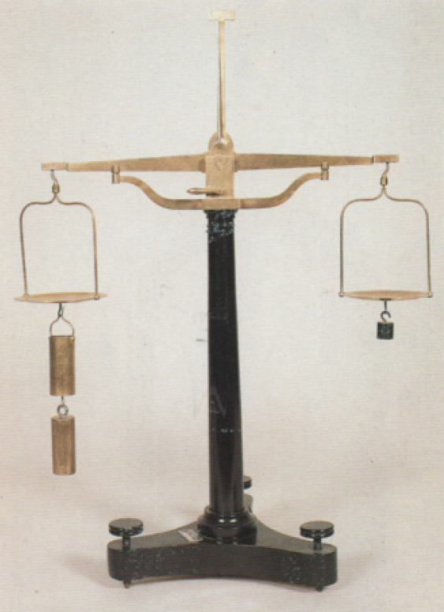

Bilancia idrostatica
Scuola di provenienza: Liceo Statale "P.E. Imbriani", Avellino
Settore: Idraulica
Costruttori: Sconosciuto
Materiali: Legno di abete e ottone
Accessori: Nessuno
Stato di conservazione: Buono
Descrizione: Usata per la spinta di Archimede ricevuta dai corpi immersi in un liquido. Su un piatto sono appesi due cilindri dello stesso volume e quello pieno è attaccato a quello cavo. All´ altro piatto è sospesa una tara. Immergendo il cilindro pieno in un liquido,all´ equilibrio risulta alterato e la bilancia s´ inclina dalla parte della tara. Riempiendo il cilindro cavo dello stesso liquido si stabilisce l´ equilibrio iniziale. Si evince che la spinta verso l´ alto, ricevuta dal cilindro pieno, è uguale al peso del liquido contenuto nel cilindro cavo.